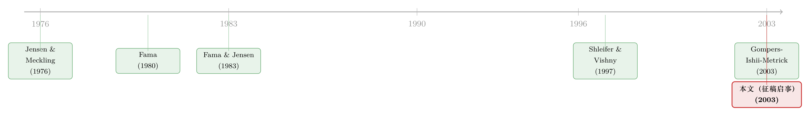

一张过期二十多年的征稿启事：当「公司治理」还在忙着给自己划地盘
本文读的是 Advances in Financial Economics 第 9 卷「公司治理」专刊征稿启事（Call for Papers, 2003）：它不是一篇论文，没有数据、没有回归、没有模型，却用短短一页纸，给「公司治理」下了一个异常宽泛的定义——「帮助公司及其他组织有效管理、运营并配置经济资源的一整套控制系统」。这份启事真正有意思的地方，不在它要招什么论文，而在它不得不把网撒得这么大这件事本身：在 2003 年，公司治理这门学问，连自己的边界都还没画好。
1 引言：一份没有结论的「论文」
我们读论文，是为了读它的结论——它发现了什么、用什么识别出来的、量级有多大。可如果有人递给你一份征稿启事（Call for Papers），你该怎么读？
它没有研究问题，只有一个征集主题；没有数据，只有一个投稿地址；没有显著的系数，只有一行加粗的截稿日期——September 1st, 2003。更尴尬的是，今天是 2026 年，这个截稿日已经过去了二十多年，这一期专刊（Advances in Financial Economics, Volume 9）也早已尘埃落定、排版付印。读一份过期二十多年的广告，能读出什么？
但换个角度看，正因为它什么结论都没有，它反而成了一张难得的快照：它把「一群最懂行的人，在 2003 年这个时间点，认为公司治理应该研究什么」这件事，一字不漏地写了下来。结论会过时，定义却会沉淀。于是这一页纸真正值得琢磨的，不是它招来了哪些论文，而是它给「治理」下的那个定义——以及这个定义为什么非得下得这么宽。
（顺带一提，这种「读顶刊里那些不是论文的东西」的尝试，本博客并不是第一次做：从一份《八行标题的目录》，到一份《八个名字撑起的编委名单》，再到《一页夹在顶刊里的过刊广告》，都是同一种好奇心。这份征稿启事，正好是那张目录的「上游」——先有了它，才有了那一期论文。）
2 一份征稿启事，到底说了什么
先把这页纸读清楚。启事开宗明义，把公司治理（corporate governance）「广义地」定义为：
the system of controls that helps corporations and other organizations effectively manage, administer and direct economic resources.
一整套「控制（controls）」系统——注意，它用的不是「监督」「激励」「问责」这些更窄的词，而是一个偏工程、偏控制论的字眼。这个用词其实泄露了它的思想血统：把公司看成一台需要被「控制」以免跑偏的机器，正是代理理论（agency theory）看世界的方式。谁来控制经理人、用什么控制、控制得好不好，这就是治理。
接着，启事列出了它「特别欢迎」的题目，而这份清单的跨度大得惊人：
- 公司内部的机制：董事会（boards of directors）、组织设计（organization design）、特许经营协议（franchise agreements）、战略联盟（strategic alliances）；
- 公司外部的强制性机制：联邦、州、地方层面那些约束公司行为的法律法规（federal, state, and local laws and regulations）；
- 所有权与索取权结构：公司的所有权结构（ownership structure），以及对公司价值「形形色色、互相冲突的索取权（the complex array of divergent claims on the value of the firm）」。
然后是几行最具时代质感的细节：论文要一式三份（in triplicate）寄到俄亥俄州立大学 Fisher 商学院的 Anil Makhija 手上。一式三份——在那个还要靠平信和复印件评审的年代，这四个字几乎是一枚时间戳。
3 真正关键的一步：为什么这张网撒得这么大
读到这里，一个自然的问题是：这份清单为什么这么杂？董事会和「特许经营协议」有什么关系？「战略联盟」不是产业组织（industrial organization）的题目吗？把这些八竿子打不着的东西塞进同一份征稿启事，是编辑偷懒、来者不拒，还是另有讲究？
我倾向于认为，这恰恰是这页纸最值得玩味的地方——它宽，不是因为含糊，而是因为它背后那个定义本身就要求它宽。
如果你真的相信治理就是「配置经济资源的那套控制系统」，那么逻辑上，凡是约束「谁能调动资源、调动多少、为谁调动」的安排，都是治理。董事会是控制；但一纸把经营权租出去的特许经营协议，同样是控制；两家公司结成战略联盟、互相交出一部分决策权，也是控制；州法律里那条反收购条款，更是从公司外部施加的控制。于是反转出现了：清单看似杂乱，其实高度自洽——它不是把无关的题目硬凑在一起，而是把「控制」这条主线，从公司最内层（董事会）一路拉到最外层（法律），中间还顺手收编了介于两家公司之间的那些半契约安排（联盟、特许）。
这就引出了那条贯穿启事的、最隐蔽也最重要的二分法：公司内部（inside the firm）的治理 vs. 公司外部（outside the firm）的治理。 内部机制是公司自己设计、自己能改的——董事会构成、组织架构、激励合约；外部机制则是它改不了、只能接受的——法律、监管、市场。这条「内 / 外」之分，后来几乎成了整个治理文献的骨架：一头连着《代理问题没有标准答案——一部「公司治理」的发明史》里讲的那些内生设计，另一头连着《危机是一台显影液——把治理从内生性里冲洗出来》里用外部冲击做的那些识别。
而那句「对公司价值形形色色、互相冲突的索取权」，更是一句藏在征稿启事里的纲领。股东、债权人、经理人、员工，对同一块价值各执一词——治理研究的，说到底就是这些冲突索取权之间如何分账、谁能压过谁。债权人那一头的故事，本博客也追过不少，比如《股东说了算，债主就要遭殃吗？——治理符号如何被收购门掰弯》。
4 2003：一个不普通的年份
把这份启事放回 2003 年，它就更不只是一页例行公事的广告了。
2001 年的安然（Enron）、2002 年的世通（WorldCom），刚刚把「治理失灵」四个字砸进所有人的视野；2002 年 7 月，美国通过了 Sarbanes–Oxley 法案，几乎是把「外部强制性治理机制」这件事，亲手推到了风口浪尖。启事里那句「公司外部的强制性治理机制——联邦、州、地方的法律法规」，在 2003 年读来，绝不是泛泛而谈，而是直指当时最灼手的政策议题。
也正是在 2003 年，治理研究迎来了它最有标志性的一篇实证：Gompers, Ishii & Metrick（2003）用 24 条反收购条款攒出一个「治理指数」（G-index），发现治理好的公司股票回报更高。一边是顶刊在发治理的扛鼎之作，一边是另一家期刊在为治理专刊广发英雄帖——这两件事撞在同一年，本身就说明：公司治理在 2003 年，正处在一个边界尚未收口、却急速扩张的时刻。一门学问在它最热的时候，往往也是它定义最松、网撒最大的时候。这份征稿启事，记录的正是这种「热」。
5 文献脉络：从一台机器，到一整套控制
那么，这份启事所代表的「治理观」，是从哪条路走来的？
故事的源头，公认是 Jensen & Meckling（1976）。他们把公司拆成一束契约（nexus of contracts），并第一次给「代理成本（agency cost）」标了价——所有权与控制权一旦分离，经理人就有了拿股东的钱办自己事的空间。这是「把公司看成需要被控制的机器」的起点（这条线后来如何延展，可参见《重读 Jensen 与 Meckling 五十年》与《四十年后重读自由现金流》）。
接着，Fama（1980）把焦点从「股东 vs. 经理」挪到了经理人市场——是劳动力市场的声誉机制，替股东「替补」做了一部分监督。然后，Fama & Jensen（1983）正式把「所有权与控制权的分离」这件事讲透，并区分了决策的「管理」与「控制」两个环节——这几乎就是后来征稿启事里「manage, administer and direct」那一串动词的理论原型。

再往后，Shleifer & Vishny（1997）的那篇综述，把零散的机制收拢成一张地图：投资者凭什么相信自己能拿回钱？答案就是治理——法律保护、大股东、董事会、接管市场，内外并举。这张「内 / 外」地图，和我们这份 2003 年征稿启事的骨架，几乎严丝合缝。而 Gompers, Ishii & Metrick（2003）则把这张地图变成了一个可回归的数字，给整个领域装上了实证的引擎。
于是这份征稿启事的位置就清楚了：它站在 1976—1997 那条理论主线的下游，又恰好与 2003 年那波实证浪潮并肩——它不是哪一篇具体研究，而是这条脉络在某个时刻「招兵买马」时，留下的一张集合令。
6 评论与延伸（Q&A + 研究方向）
(a) 几个可能的疑问
Q：一份征稿启事也值得专门写一篇评述吗？它连结论都没有。
正因为没有结论，它才不会过时。论文的发现会被推翻、被刷新，但「2003 年人们如何定义治理」这件事，是一个不可改写的历史事实。这页纸的价值不在「答案」，在「问题被怎么框定」——而问题的框定，往往比答案更能暴露一门学问的状态。
Q：它给治理下的定义，和教科书有什么不一样？
教科书常把治理窄化为「保护股东、约束经理」。这份启事却用「配置经济资源的一整套控制系统」把它放得很宽——宽到能装下联盟、特许、法律。差别在于：前者预设了「谁该被保护」，后者只问「谁在控制资源」。后者更中性，也更接近代理理论的本来面目。
Q：把 franchise agreements、strategic alliances 也算进治理，不是越界到产业组织去了吗？
表面像越界，骨子里自洽。只要你认定治理 = 控制权的配置，那么任何把一部分决策权交给外人的契约——无论对象是经理、加盟商还是联盟伙伴——都落在治理的射程内。它扩张的不是题材，而是同一条「控制」逻辑的适用半径。
Q：「公司内部 / 外部」这条二分法，重要在哪？
它后来几乎决定了识别策略的走法。内部机制是公司内生选择的，做因果推断时天然有内生性麻烦；外部机制（一纸新法、一场危机）则常被当成准自然实验，用来「外生地」撬动治理。这份启事在 2003 年就把这条缝划出来了。
Q：2003 这个年份，真的特殊吗？
特殊。安然、世通刚爆，SOX 刚落地，治理是当时最烫的政策词；同年 Gompers–Ishii–Metrick 的 G-index 横空出世。一门学问最热、定义最松、最急于扩张的时刻，常常重合——这份启事正好卡在那个点上。
Q：「一式三份」「截稿 9 月 1 日」这种细节，有意义吗？
有，作为时代的注脚。「in triplicate」标定了一个还在用纸质评审的年代；一个早已作废的截稿日，则提醒我们正在做一件考古的事——读的不是「要不要投稿」，而是「那时的人在想什么」。
(b) 几个可能的研究问题与提案
1. 治理机制与公司债定价：股东友好 ≠ 债主友好。
【经济故事】启事把「形形色色、互相冲突的索取权」摆在了中心，而股东与债权人正是最经典的一对冲突。一项把公司推向股东利益的治理安排（比如削弱反收购条款），对债权人未必是好事——它可能抬高资产替代的风险，从而抬高信用利差。
【可行性】高。数据有 TRACE 公司债成交、Mergent FISD 发行条款、治理指数（G-index / E-index）；识别可借助治理相关的法律变更或指数重构事件。本博客已有相关探索（见上引《治理机制与债券价格》）。
2. 外资持有人，作为一种「外部治理机制」。
【经济故事】启事把治理分成「内部 / 外部」，但 2003 年的清单里，外部那一栏几乎只写了「法律法规」。二十年后，一个越来越重要的外部约束其实是外资机构持有人——他们带来不同的监督标准与退出威胁。问题是：外资持有比例上升，是改善了治理、压低了公司债的信用与流动性溢价，还是在压力期反而加剧了抛售？
【可行性】中。需要把外资持有数据（如 FactSet/eMAXX 的债券持有人）与公司债流动性指标对接；识别可利用指数纳入或资本账户开放等准外生冲击。这一方向与本人正在推进的「外资公司债投资者与美国公司债流动性」研究高度契合。
3. 联盟与特许，作为「半契约治理」的溢出。
【经济故事】启事把战略联盟、特许经营也纳入治理，暗示控制权可以跨公司边界配置。那么当联盟一方陷入困境，治理风险会不会沿着这条半契约链条传染给伙伴？
【可行性】中。可用 SDC Platinum 的联盟数据匹配伙伴破产事件，做事件研究；本博客已有近邻成果（见《你的合伙人破产了，你会不会跟着一起垮？》），延伸到债权人一侧是自然的下一步。
4. 用「征稿启事 / 编辑文本」给学科边界做文本分析。 【经济故事】这页纸本身就是一份「领域自我定义」的语料。如果把几十年里各刊各专辑的征稿启事拼成一个语料库，用文本方法量出「治理」这个词所覆盖的题材如何随时间扩张或收缩，就能给「学科边界如何演化」一个可测量的刻度。 【可行性】中。语料获取是主要门槛（许多征稿启事未被系统收录）；方法上可借鉴文本相似度与主题模型，识别上偏描述性而非因果。
7 我的判断
老实说，这页纸的「贡献」无法用通常的标准来衡量——它没有识别、没有结果，谈不上稳健性，也无所谓威胁。但作为一份史料，它的价值是真实的：它用一个异常宽泛的定义和一张异常驳杂的题目清单，精确地拍下了公司治理在 2003 年的样子——一门正处在扩张期、连边界都还在协商的学问。它把「内部 / 外部」「控制」「冲突的索取权」这几块日后会反复出现的积木，提前摆在了同一页纸上。
要说担忧，那就是「宽」是有代价的：一个能装下董事会、特许经营、战略联盟和州法律的定义，几乎什么都能装，也就意味着它几乎什么都没排除——这正是后来那么多治理实证苦于内生性、苦于「机制太多、识别太少」的远因。
我更想看到的，是顺着这张集合令往下走一步：这一期专刊最终招来了哪些论文、它们如何回应（或背离）了启事里那个宽泛的定义？关于这一点，最好的续集，就是那一期的目录本身——征稿启事许下的愿，到底兑现了几分，答案都写在那张目录上。
参考文献
- Jensen, M.C. & Meckling, W.H. (1976). Theory of the Firm: Managerial Behavior, Agency Costs and Ownership Structure. Journal of Financial Economics 3(4), 305–360.
- Fama, E.F. (1980). Agency Problems and the Theory of the Firm. Journal of Political Economy 88(2), 288–307.
- Fama, E.F. & Jensen, M.C. (1983). Separation of Ownership and Control. Journal of Law and Economics 26(2), 301–325.
- Shleifer, A. & Vishny, R.W. (1997). A Survey of Corporate Governance. Journal of Finance 52(2), 737–783.
- Gompers, P., Ishii, J. & Metrick, A. (2003). Corporate Governance and Equity Prices. Quarterly Journal of Economics 118(1), 107–155.